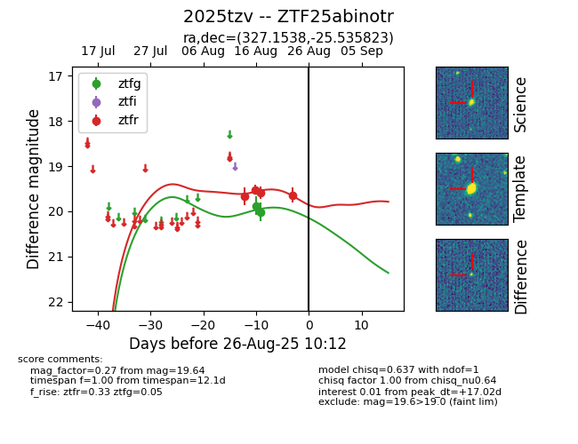

Target 2025tzv at 2025-08-26 10:12, see:
FINK: fink-portal.org/ZTF25abinotr
Lasair: lasair-ztf.lsst.ac.uk/objects/ZTF25abinotr
ALeRCE: alerce.online/object/ZTF25abinotr
TNS: wis-tns.org/object/2025tzv
YSE: ziggy.ucolick.org/yse/transient_detail/2025tzv
alt names
ZTF25abinotr (ztf,fink)
2025tzv (tns,yse)
coordinates:
equatorial (ra, dec) = (327.1538,-25.53582)
galactic (l, b) = (24.4491,-49.23279)
photometry
last ztfg=20.02, ztfr=19.64
2 ztfg, 4 ztfr detections
